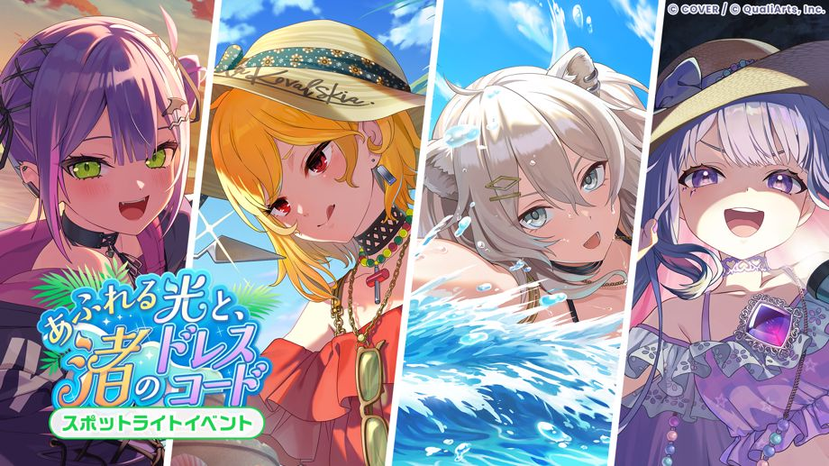
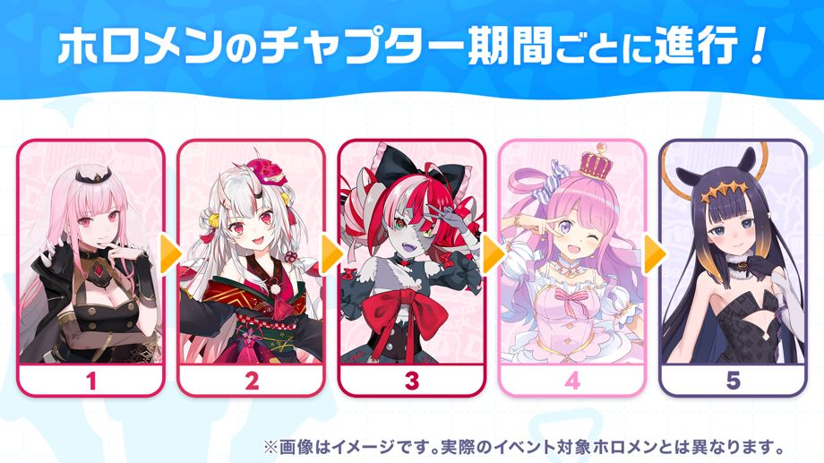
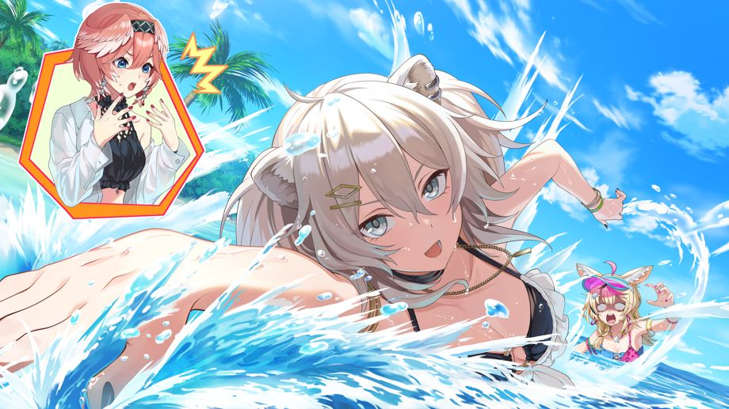
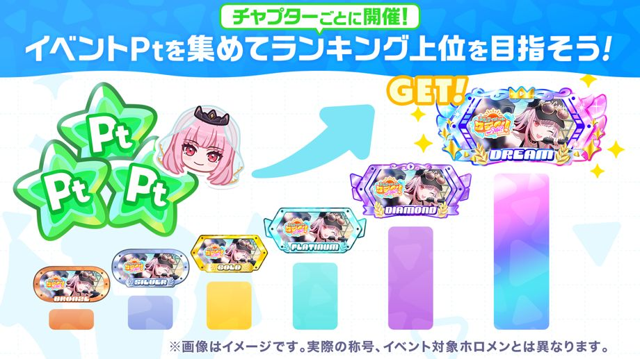
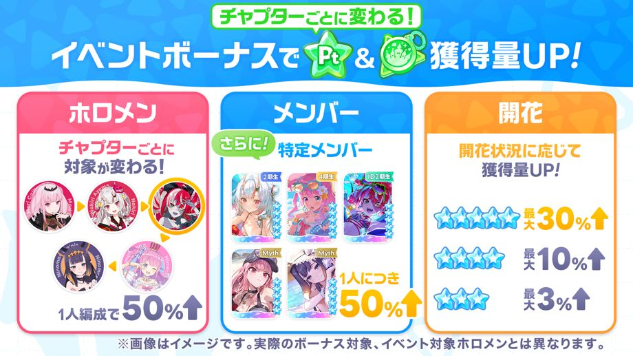
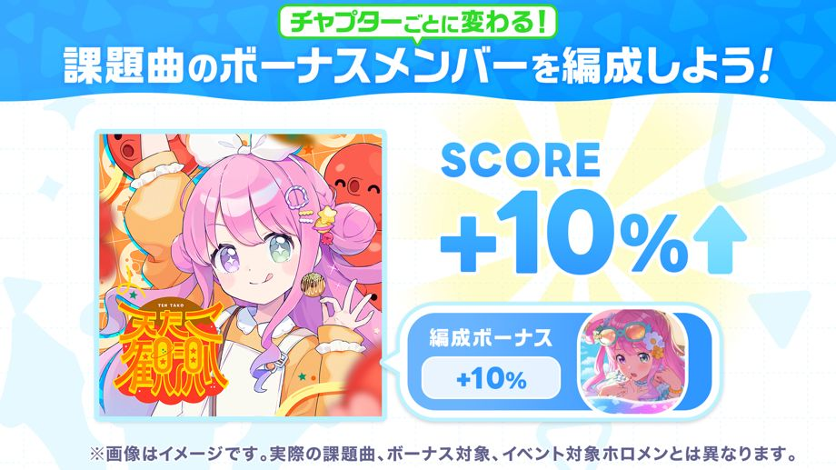
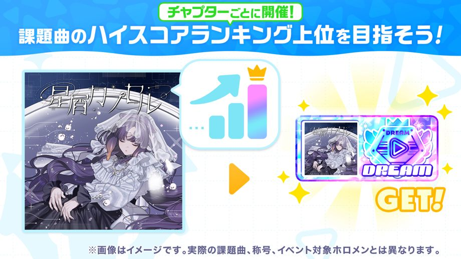

スポットライトイベント「あふれる光と、渚のドレスコード」が開催！
◆参加条件
メインストーリー1章4話「Mythical Connection」クリア
◆開催期間
・イベント期間
2026-10-19 20:00:00,2026-10-27 19:59:59
・チャプター1：常闇トワ
2026-10-19 20:00:00,2026-10-21 19:59:59
・チャプター2：カエラ・コヴァルスキア
2026-10-21 20:00:00,2026-10-23 19:59:59
・チャプター3：獅白ぼたん
2026-10-23 20:00:00,2026-10-25 19:59:59
・チャプター4：古石ビジュー
2026-10-25 20:00:00,2026-10-27 19:59:59
◆結果発表期間
チャプター1：2026-10-22 12:00:00 〜
チャプター2：2026-10-24 12:00:00 〜
チャプター3：2026-10-26 12:00:00 〜
チャプター4：2026-10-28 12:00:00 〜
結果発表期間終了は全チャプター共通で2026-11-02 19:59:59までとなります。
◆ランキング報酬配布期間
2026-10-28 12:00:00,2026-11-02 19:59:59
◆イベントバッジ交換期限
2026-11-02 19:59:59
イベント概要

スポットライトイベントは、一人ひとりのホロメンのチャプターに分かれて進行します。
ライブやミニゲームをプレイすると、チャプター期間ごとにイベントPtとイベントバッジを獲得できます。
各チャプターのイベントPtを集めると、チャプターごとのストーリーを視聴できます。
また、各チャプターのイベントバッジごとに、交換所でイベントメモリーなどのアイテムと交換することができます。
◆イベントメモリー
・チャプター1：常闇トワ

・チャプター2：カエラ・コヴァルスキア

・チャプター3：獅白ぼたん

・チャプター4：古石ビジュー

イベントPtランキング

各チャプターごとに開催されるイベントPtランキングは、チャプター期間中に獲得したイベントPtの累計値に応じたランキングです。
ランキングに入賞すると、イベント限定称号などの報酬を獲得できます。
※詳細は［イベント］→［ランキング］→［イベントPtランキング］をご確認ください。
イベント獲得ボーナス

スポットライトイベントでは、チャプターごとにイベントボーナスの対象が変わります。
イベントボーナスには、ライブのイベントPtとイベントバッジの獲得量がアップするボーナスがあります。
ライブの獲得ボーナスには「メンバーボーナス」「ホロメンボーナス」「開花ボーナス」の3種類があります。
・メンバーボーナス：対象のメンバーを編成してライブに挑戦すると獲得量アップ
・ホロメンボーナス：対象のホロメンのメンバーを編成してライブに挑戦すると獲得量アップ
・開花ボーナス：編成したメンバーの開花状況に応じて、ライブ挑戦時の獲得量アップ
また、イベントボーナスには、ミニゲームのイベントPtとイベントバッジの獲得量がアップするボーナスがあります。
ミニゲームの獲得ボーナスには「ミニゲームボーナス」「メンバーボーナス」の2種類があります。
・ミニゲームボーナス：対象のミニゲームに挑戦すると獲得量アップ
・メンバーボーナス：対象のメンバーを所持しているだけで獲得量アップ
◆ボーナス対象のホロメン
チャプター1：常闇トワ
チャプター2：カエラ・コヴァルスキア
チャプター3：獅白ぼたん
チャプター4：古石ビジュー
◆ボーナス対象のメンバー(全チャプター共通)
・★5 ゆらゆら過ごす木陰のバカンス 常闇トワ
・★5 木陰で紡ぐShiny Memory カエラ・コヴァルスキア
・★5 一心不乱のちゅるタイム 獅白ぼたん
・★5 笑顔輝くSand castle 古石ビジュー
◆ボーナス対象のミニゲーム(全チャプター共通)
・そろえてクッキング
※詳細は、［イベント］→［イベントボーナス］をご確認ください。
イベントスコアボーナス

イベントボーナスには、ボーナス対象のメンバーを編成してイベント課題曲に挑戦すると、期間限定スコアがアップするスコアボーナスがあります。
スコアボーナスの対象メンバーはイベント課題曲ごとに異なります。
イベント課題曲はチャプターごとに変わります。
◆イベント課題曲
チャプター1：Shallow Shadow
チャプター2：Forge My Soul
チャプター3：アマリリス
チャプター4：CORE//UNBREAKABLE
※詳細は、［イベント］→［イベントボーナス］をご確認ください。
ハイスコアランキング

各チャプターごとに開催されるハイスコアランキングは、イベント課題曲ごとに期間限定スコアを競うランキングです。
ランキングに入賞すると、イベント限定称号を獲得することができます。
※イベント課題曲では、イベント期間限定スコアと通常のスコアのどちらも保存されます。
※詳細は、［イベント］→［ランキング］→［ハイスコアランキング］をご確認ください。
注意事項
・本イベントで獲得したイベントPt、イベントバッジは次回イベントへ持ち越すことはできません。
・交換期限を過ぎたイベントバッジはご利用いただけません。ご注意ください。
・ランキング報酬はランキング報酬配布期間中にログインすることで［パーク］→［メニューアイコン］→［ギフト］よりお受け取りいただけます。
・ランキング報酬配布期間中に一度もログインしなかった場合でも、期間終了後にギフトよりお受け取りいただけます。
・ランキング報酬配布期間までに受け取りが完了していない達成済みのミッション報酬は、期間終了後に［パーク］→［メニューアイコン］→［ギフト］よりお受け取りいただけます。
・本イベントの交換所で交換可能なイベントメモリーは、今後再登場する可能性がございます。
・結果発表期間終了後、イベントストーリーは［シアター］→［ホロメンストーリー］→［各ホロメンのホロメンストーリー］よりご確認いただけます。
・通信状況等の影響により、開始および終了時刻に1秒前後の誤差が生じる場合がございます。
・開催期間および内容は、予告なく変更する場合があります。
・詳細は［パーク］→［イベント］にある本イベントをご確認ください。